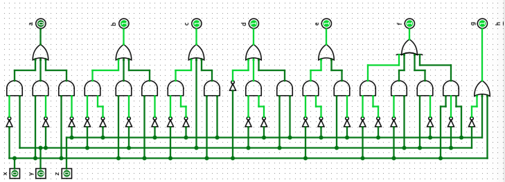
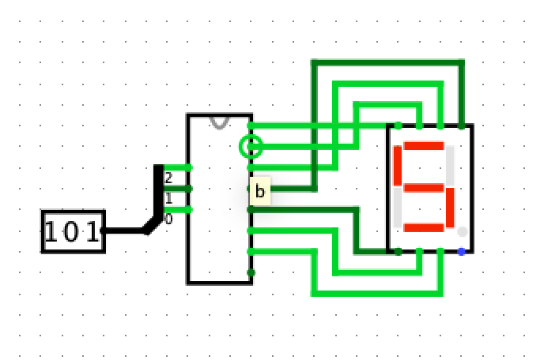

Titel: Gates and Wires
Dit verslag werd opgesteld door:
De oplossing bestaat uit de volgende bestanden (geef alle bestanden op):
The NAND gate, which stands for NOT-AND is quite intuitive.
The output of its truth table is described by the inverse of a regular AND gate.
As such, a NAND gate is simply built from an AND gate followed by a NOT gate.
The NAND gate is functionally complete, any algebraic or truth table can thus be implemented
using only NAND gates.
Below you can see the AND, OR and NOT gates implemented using only NAND gates.
In the following figure you can find the truth table converted into the corresponding boolean expressions for X and Y
followed by the implementation of these espressions using logic gates.
In the next figure you can find the truth table for the 7-segment display and the corresponding boolean expressions
These expressions are especially useful within the context of building a circuit as the output of any given circuit,
defined by the simple AND, OR and NOT operations from boolean algebra, have corresponding logic gates in logisim.
Therefore, the expressions can be thought of as blueprints with which one builds the desired circuit.
Next you can see the truth table for the 7-segment display transformed into circuitry.
Finally, here is the 7-segment display fully implemented
